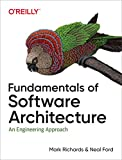

Threads are a fundamental part of the Java platform. As multicore processors become the norm, using concurrency effectively becomes essential for building high-performance applications

The Big Ideas Behind Reliable, Scalable, and Maintainable Systems. Data is at the center of many challenges in system design today.

By using concrete examples, minimal theory, and two production-ready Python frameworks—Scikit-Learn and TensorFlow—this book helps you gain an intuitive understanding of the concepts and tools for building intelligent systems.
